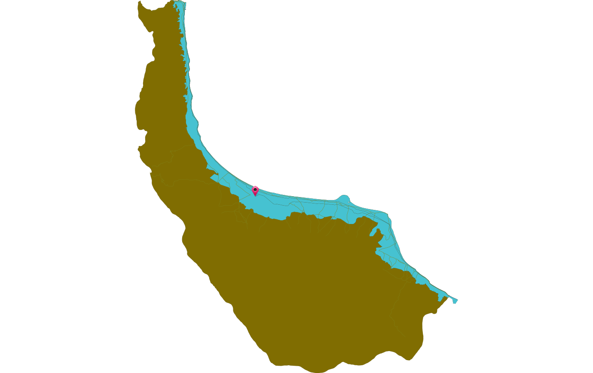

استان انتخابی :
گیلان
: مختصات محل انتخاب شده برای استخراج اطلاعات و تولید این گزارش
| "Y" | "X" |
| 4149916.84875 | 354300.213697 |
:نقشه ذیل موقعیت محدوده به همراه نقطه انتخابی نمایش می دهد

نمایش اطلاعات مربوط به
پهنه بندی عملکردی
| مقدار | عنوان |
| C18 | کد پهنه |
| تالاب هاي بين المللي | نام پهنه |
نمایش اطلاعات مربوط به
مرز مدیریتی
| مقدار | عنوان |
| پهنه خطر | توضیحات |
| فهرست ساختمانهاي ممنوع در زير تراز (22-) در اراضي ساحلي درياي خزر: بيمارستانها، درمانگاههايي با مقياس خدماترساني شهري، دانشگاهها، مراکز آموزشي حرفهاي، هنرستانها، دبيرستانها، مخابرات، شهرداري، فرمانداري، حوزههاي انتظامي، ثبت اسناد و املاک، ثبت احوال، دادگاهها و دادسراها، شعب مرکزي بانکها، سالنهاي اجتماعات، موزهها، مراکز آتشنشاني، مراکز دفن زباله، کشتارگاهها، غسالخانه، گورستان، تاسيسات توليد، انتقال و توزيع برق، تاسيسات مخابراتي، پايانههاي مسافري، فرودگاه، ايستگاه راهآهن، سردخانه، سيلو، انبارهاي اصلي شهر-احداث هر نوع ساختمان غیر از سازههای سبک و موقت در تمام اراضی ساحلی دریای خزر بودن رعایت تراز حداقل (24-) و احداث کلیه ساختمانهای امدادی، درمانی، ادارات اصلی شهر و منطقه، تاسیسات آب و برق و مخابرات و همچنین هرگونه تاسیسات و تجهیزات و ساختمانهای خدماتی که توقف و تعطیل کار و خدمات آنها برای شهر قابل تحمل نبوده و امکان جایگزینی سریع آنها در صورت محاصره شدن در آب نباشد، در زیر تراز (22-) ممنوع است. | ضوابط |
نمایش اطلاعات مربوط به
مخاطرات
| میزان خطر | نوع مخاطره |
| خطر زیاد | باران |
| خطر زیاد | زلزله |
| خطر زیاد | رانش |
| خطر متوسط | سیل |
| خطر کم | یخبندان |
| خطر متوسط | خشنسالی |
| خطر کم | طوفان |
نمایش اطلاعات مربوط به
فرضتهای دریایی
| میزان | بخش |
| کم | گردشگری |
| زیاد | صنعتی |
| زیاد | سکونت |
| متوسط | کشاورزی |
نمایش اطلاعات مربوط به
تهدیدهای دریایی
| میزان | بخش |
| متوسط | گردشگری |
| متوسط | صنعتی |
| متوسط | سکونت |
| متوسط | کشاورزی |
نمایش اطلاعات مربوط به
توان اکولوژیک
| توان | کاربری |
| 3 | کشاورزی |
| 1 | گردشگری |
| 3 | صنعتی |
| 1 | حفاظتی |
| 3 | شهری |
این گزارش توسط نرم افزار سامانه پشتیبان تصمیم گیری برای مدیریت یکپارچه مناطق ساحلی تولید شده است
نرم افزار فوق توسط اداره کل مهندسی سواحل و بنادر، معاونت توسعه و تجهیز بنادر سازمان بنادر و دریانوردی توسعه داده شده است